Rollen und Rechte
Die Rechte zur Bedienung von xmera Omnia werden über Rollen gesteuert.
Die Zuordnung der Rollen zu den Benutzern erfolgt (bis auf die Rolle Administrator) in den Objekten.
Dabei können einem Benutzer in verschiedenen Objekten unterschiedliche Rollen zugewiesen werden. Erhält ein Benutzer in einem Objekt mehrere Rollen, wirken diese kumulativ.
| Für Felder/Attribute in Aufgaben können weitere Berechtigungen (Lesen, Schreiben) vergeben werden. Diese können in den Administrationsbereichen Workflow und Eigene Felder konfiguriert werden. |
Rollenliste
Über den Menüpunkt Rollen und Rechte gelangt man zur Rollenliste in der alle bereits bestehenden Rollen aufgeführt werden.
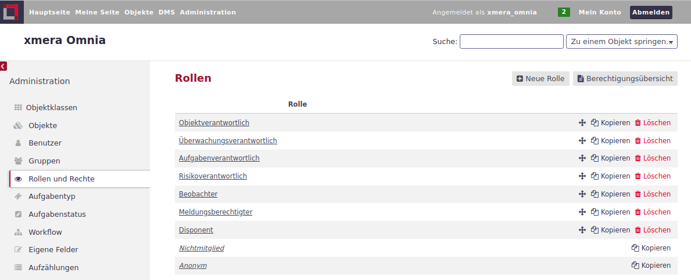
In dieser Ansicht können neue Rollen angelegt oder die bestehenden Rollen verwaltet und bearbeitet werden.
Neben den individuellen Rollen gibt es in xmera Omnia zwei fest integrierte Basisrollen:
-
Anonym: Rechte der Benutzer, die (noch) nicht am System angemeldet sind.
-
Nichtmitglied: Rechte angemeldeter Benutzer, die nicht Mitglied im betrachteten Objekt sind.
Diese Rollen lassen sich nicht löschen. Die Rechte, die diese Rollen besitzen, können jedoch durch den Administrator angepasst werden.
Rollen bearbeiten
Die Bearbeitungsmaske der Rechte einer Rolle wird über einen Klick auf den Rollennamen aufgerufen. In der Rechteverwaltung können drei Bereiche gepflegt werden:
-
Modulübergreifende Rechte: Grundlegende Festlegungen zur Sichtbarkeit/Nutzbarkeit von Informationen anderer Nutzer.
-
Modul-Berechtigungen: Festlegung von Rechten in der Sichtbarkeit und Bedienung von Objekten und Modulen.
-
Detailierte Aufgabenrechte: Festlegung der Sichtbarkeit/Bedienbarkeit von Aufgabentypen durch die Rolle.
Im Folgenden werden die Bereiche erläutert.
- Modulübergreifende Rechte
-
In diesem Abschnitt werden allgemeine Rechte bestimmt.
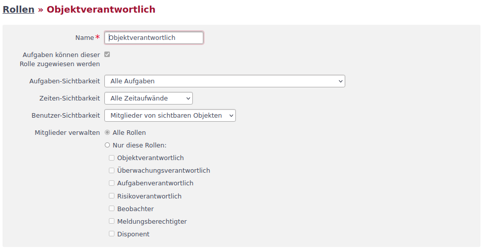
Diese Attribute können festgelegt werden:
Attribut Beschreibung Bemerkung Name
Name der Rolle
Aufgaben können dieser Rolle zugewiesen werden
Aufgaben können nur den Benutzern zugeordnet werden, deren Rolle hier einen Haken hat.
Aufgaben-Sichtbarkeit
Die der Rolle angezeigten Aufgaben können auf öffentliche (nicht als privat gekennzeichnete Aufgaben) oder selbst erstellte bzw. dem Benutzer zugeordneten Aufgaben eingeschränkt werden.
Wird nur angezeigt, wenn das Recht besteht Aufgaben zu sehen.
Standardwert ist öffentliche AufgabenZeiten-Sichtbarkeit
Einschränkung auf den eigenen Zeitaufwand
Wird nur eingeblendet, wenn ein Recht in der Zeiterfassung besteht.
Benutzer-Sichtbarkeit
Der Rolleninhaber kann entweder alle aktiven Benutzer sehen oder nur jene aus Objekten, die für ihn sichtbar sind.
Standardwert ist Alle aktiven Benutzer
Mitglieder verwalten
Festlegung, welche Rollen bei der Mitgliederverwaltung in einem Objekt zur Verfügung stehen.
Wird nur angezeigt, wenn im Modul Objekte das Recht besteht, Mitglieder zu verwalten. Standardwert ist Alle Rollen
- Modul-Berechtigungen
-
Im Bereich Berechtigungen können Rechte zur Sichtbarkeit und Bedienbarkeit von Objekten und Modulen festgelegt werden. In dem folgenden Bild sind die Berechtigungseinstellungen der Objekte und der Foren zu sehen.
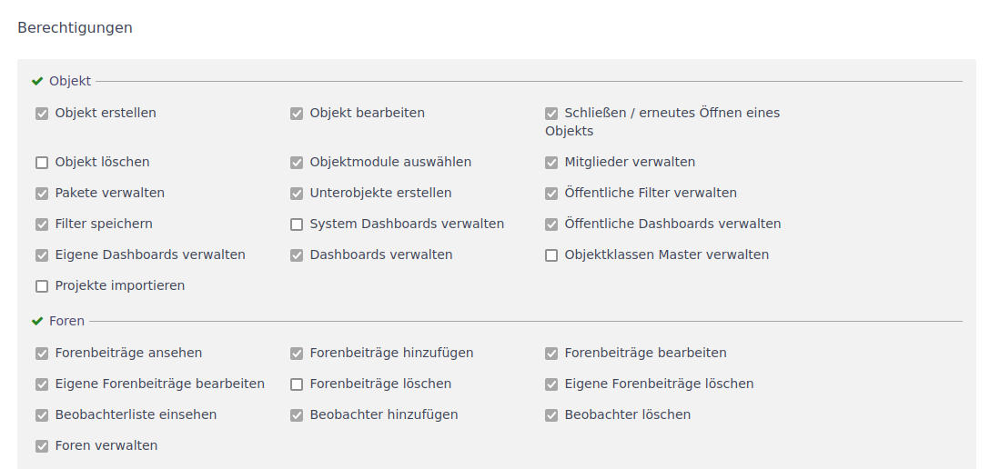
Durch Setzen und Abwählen der Häkchen können die Rechte einer Rolle angepasst werden.
Mit dem Klick auf das grüne Häkchen neben der Modulüberschrift werden alle Rechte eines Moduls aktiviert und bei nochmaligen Klicken wieder deaktiviert.
Durch Klick auf Alles auswählen bzw. Alles abwählen können schnell alle Rechte aktiviert und deaktiviert werden.
- Detailierte Aufgabenrechte
-
Im Bereich der Aufgaben können die für die Rolle zur Verfügung stehenden Aufgabentypen eingeschränkt werden.
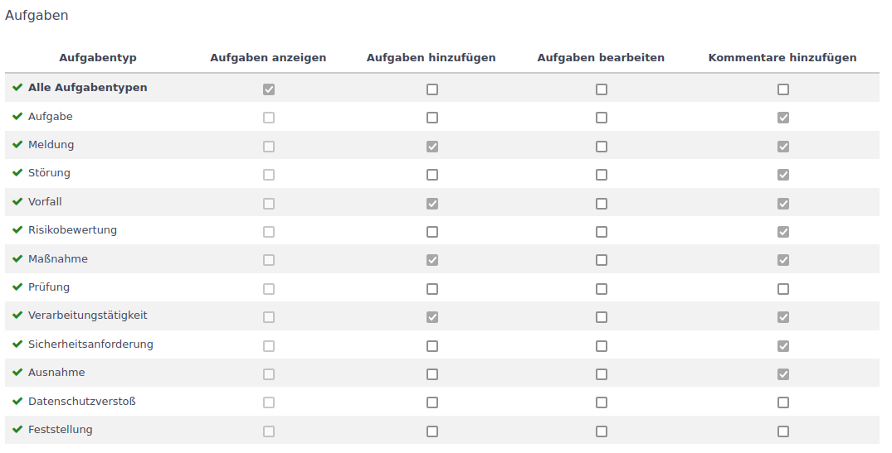
Dabei werden folgende Rechte unterschieden:
-
Aufgabe anzeigen: Aufgaben von dem Typ werden der Rolle angezeigt.
-
Aufgaben hinzufügen: Aufgaben von dem Typ können von der Rolle angelegt werden.
-
Aufgaben bearbeiten: Aufgaben von dem Typ können von der Rolle bearbeitet und gelöscht werden.
-
Kommentare hinzufügen: Aufgaben können von der Rolle kommentiert werden.
Im Standard sind alle Rechte für alle Aufgabentypen aktiv. Soll der Standard geändert werden, muss zunächst die Auswahl Alle Aufgabentypen bei dem zu ändernden Recht abgewählt werden. Anschließend können die Rechte gezielt für jeden einzelnen Aufgabentypen vergeben werden.
-
Rollen kopieren
Soll eine Rolle als Vorlage für eine neu Rolle dienen, kann aus der Rollenliste mit dem Button  in der Rollenzeile die Parametrierung in eine neue Rolle übernommen werden. In der sich öffnenden Rollenmaske sind alle Einstellungen aus der Vorlage übernommen.
in der Rollenzeile die Parametrierung in eine neue Rolle übernommen werden. In der sich öffnenden Rollenmaske sind alle Einstellungen aus der Vorlage übernommen.
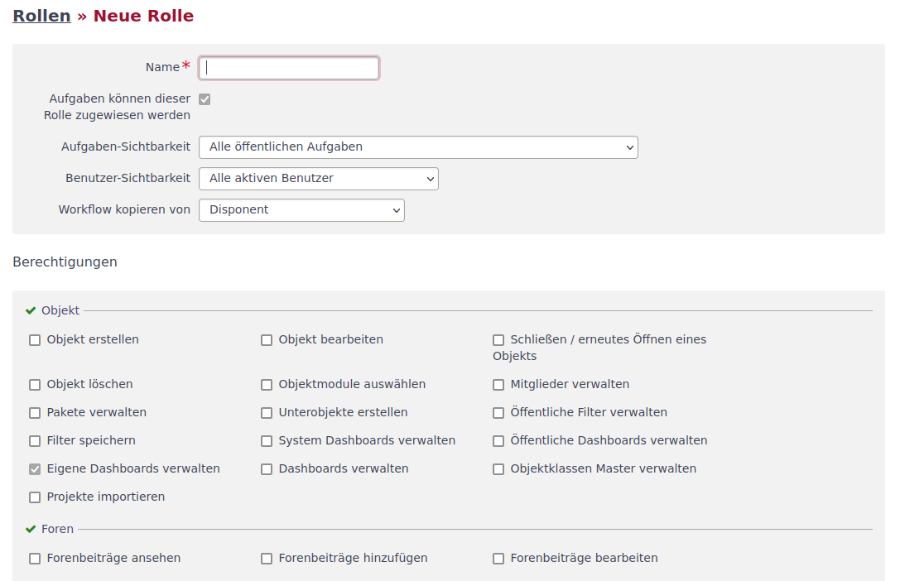
In der Maske muss der Name der neuen Rolle eingetragen werden. Alle Einträge können bearbeitet werden. Mit dem Klick auf den Button 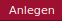 wird die neue Rolle erstellt.

Neue Rolle anlegen
Zum Anlegen einer neuen Rolle ist ein Klick auf den Button 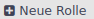 notwendig. Es wird eine Bearbeitungsmaske geöffnet.
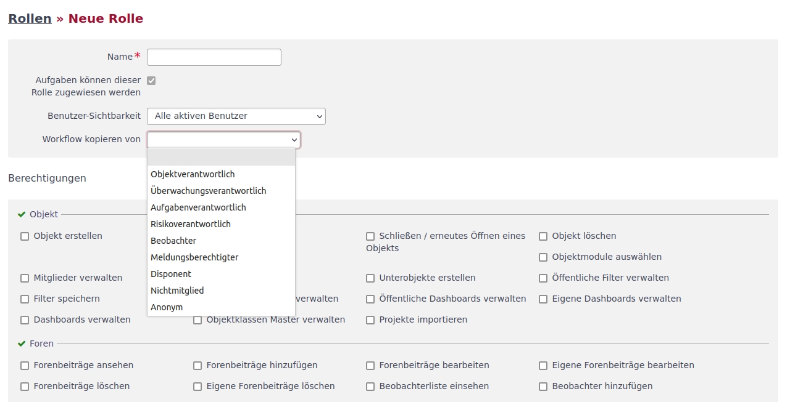
Eine Besonderheit ist, dass bei der Erstellung einer neuen Rolle die Möglichkeit besteht, einen bestehenden Workflow von einer bestehenden Rolle zu kopieren.
| Wenn eine bestehende Rolle einen gleichen oder auch nur ähnlichen Ablauf hat, macht das Kopieren Sinn, da die komplette Erstellung eines Workflows aufwendig sein kann. Ein späteres Kopieren eines Workflows ist auch noch über die Kopierfunktion im Workflow selbst möglich. |
Berechtigungsübersicht
Die Berechtigungsübersicht zeigt in einer Kreuztabelle die Berechtigungen der Rollen in den Modulen an.
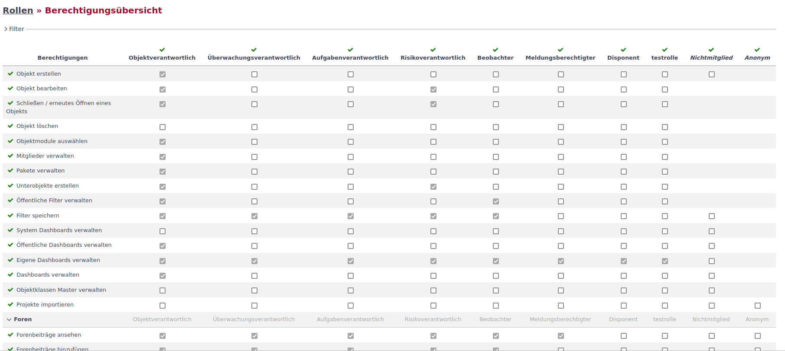
Die Modulrechte sind den Zeilen der Tabelle zu entnehmen. Die Rollen können aus den Spalten abgelesen werden. In der Übersicht können die Rechte angepasst werden. Mit dem Klick auf  werden die Änderungen übernommen.
werden die Änderungen übernommen.
| Der horizontale Scrollbalken ist unterhalb der (langen) Tabelle. Um das auf- und ab-scrollen zu vermeiden, kann auch über Drücken der Shift-Taste und dem Scroll-Rad der Maus horizontal gescrollt werden. |
Um die Übersichtlichkeit zu erhöhen, können die Rollen, wie im folgenden Bild zu sehen, gefiltert werden.
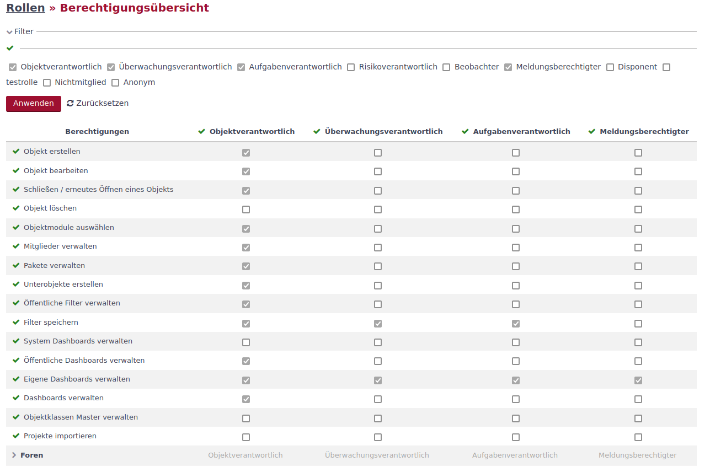
Weiter können die Rechte der einzelnen Module durch Klicken auf den grauen Pfeil ein- und ausgeklappt werden.
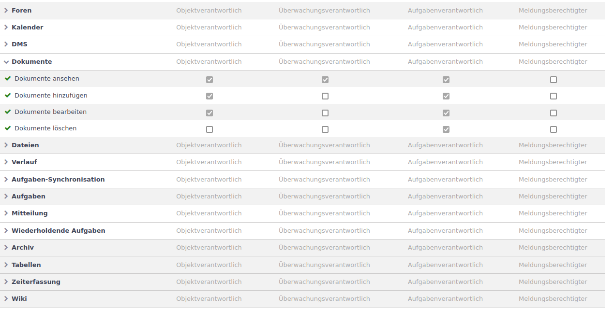
Auf diese Weise lassen sich die Berechtigungen der einzelnen Rollen auf übersichtliche Art vergleichen und ggf. anpassen.